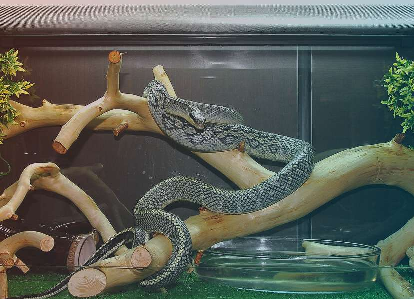

Тонкохвостый полоз – это большая змея, достигающая в длину 280 см. Чешуя на спине имеет слабовыраженные рёбрышки, по богам змея гладкая. Голова напоминает треугольную форму. Тело крепкое, тяжёлое. Размер глаз имеет небольшие отличия среди самок и самцов. У самцов они немного больше.
По окрасу радужная оболочка глаз варьируется от оливкого-серого до тёмно-жёлтого оттенка. Также она затемнена небольшим диффузным чёрным пигментом, сзади глаз отмечается тёмная горизонтальная полоса, которая тянется к уголку рта. Зрачок круглый угольно-чёрного цвета.
Тонкохвостый полоз обладает большим языком, который чёрный у основания и более светлый у окончания «вилок». Верх головки имеет оливкого-жёлтый или тёмно-серый цвет, в некоторых случаях встречают представителей с коричневым окрасом.
Общий цвет полоза – оливковый с небольшими вкраплениями зелёного и чёрного. Вентральная голова и шея – белые или кремовые. Остальные участки тела жёлтые, на которых отмечаются небольшие и нерегулярные серые или серо-чёрные узоры. Хвост чёрный с несколькими белыми полосами.
Период размножения и откладки яиц выпадает на июнь и июль месяц. В одной кладке может находиться до 13 яиц полоза.
На территории Китая тонкохвостый полоз обитает в горных и низинных лесах, в которых находятся открытые участки травянистой растительности. Часто встречается садоводам в садах и огородах. Полоз хорошо адаптирован к жизни возле человека, но его конкретная активность в течение дня до сих пор не изучена.
 Вид внесён в Красную книгу России, с пометкой «неопределённый». Нахождение полоза на территории России подвергается большому сомнению. Для того чтобы ввести охранные мероприятия необходимо провести работы по поиску месторождений полоза.
Вид внесён в Красную книгу России, с пометкой «неопределённый». Нахождение полоза на территории России подвергается большому сомнению. Для того чтобы ввести охранные мероприятия необходимо провести работы по поиску месторождений полоза.
В зарубежных странах вводится запрет на вылов и продажу тонкохвостого полоза. Так, в Гонконге к нарушителям применяются штрафные санкции.